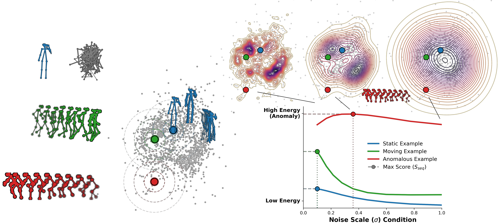

Abstract
To address this, we introduce STEP, a simple framework that utilizes Principal Component Analysis (PCA) to project pose sequences into a compact, whitened PC-space. Learning the data density within this well-behaved PC-space ensures that the injected noise translates into physically plausible variations, which allows the model to process longer video sequences without the performance collapse of raw coordinate baselines. Additionally, to mitigate inherent pose estimation inaccuracies arising from occlusions or motion blur, we integrate a sequence-level weighting mechanism based on the estimator's confidence scores.
Operating at real-time computational efficiency, our simple and lightweight framework outperforms the previous skeleton-based state-of-the-art by 12.2% (90.1% AUROC) on the challenging UBnormal dataset and achieves highly competitive results by improving on the ShanghaiTech benchmark.
Method

Qualitative Results
Per-person anomaly scores are visualised directly on the skeleton. Normal behaviour is rendered in green; as the estimated energy rises, the colour shifts through orange towards red, signalling an anomaly. The text box above each person shows the mean pose confidence score (top) and the final confidence-weighted anomaly score (bottom); its colour uniquely identifies the person's track throughout the sequence.
ShanghaiTech
UBnormal
Confidence Weighting
An occluded person sitting on a bench receives a low pose confidence score from the pose estimator. Without confidence weighting, the noisy, low-confidence skeleton causes the model to wrongly flag this normal person as anomalous (false positive). With confidence weighting, the model discounts the unreliable detection and correctly suppresses the false alarm. More generally, confidence weighting mitigates false positives caused by low-confidence detections, such as occlusions. During training it also prevents unreliable pose estimates and tracking failures from distorting the learned energy landscape, allowing the model to leverage the full training set while down-weighting erroneous detections. The text box above each tracked person shows the mean confidence score c (top) and the final confidence-weighted anomaly score (bottom).
Quantitative Results
ShanghaiTech & UBnormal
AUROC (%) on the Full and Human-Related (HR) test sets. STEP reported as mean ± std over 20 independent training runs.
| Method | ShanghaiTech | UBnormal | ||
|---|---|---|---|---|
| Full | HR | Full | HR | |
| GEPC (2020) | 76.1 | 74.8 | 53.4 | 55.2 |
| MoCoDAD (2023) | n/a | 77.6 | 68.3 | 68.4 |
| MULDE, T=1 (2024) | 78.5 | n/a | 80.6 | n/a |
| STG-NF (2023) | 85.9 | 87.4 | 71.8 | 71.5 |
| SeeKer (2025) | 85.5 | 86.9 | 77.9 | 78.9 |
| STEP | 86.2 ± 0.1 | 87.7 ± 0.1 | 90.1 ± 0.4 | 90.9 ± 0.4 |
MSAD-HR
AUROC (%) on MSAD (360 held-out test clips: 120 normal + 240 anomalous, self-supervised). MSAD contains 11 anomaly categories; 7 are human-related (HR: Assault, Fighting, People Falling, Robbery, Shooting, Traffic Accident, Vandalism) and 4 are scene-level events (Explosion, Fire, Object Falling, Water Incident) that a skeleton-based detector cannot flag. ST-Style (following ShanghaiTech): excludes non-HR clips entirely. UB-Style (following UBnormal): marks non-HR anomalous frames as normal. Backtrack: non-causal, assigns score to past frames. Online: causal.
| Method | Variant | Backtrack | Online | ||
|---|---|---|---|---|---|
| Raw | Smooth | Raw | Smooth | ||
| Prior skeleton-based methods (HR split style unspecified†) | |||||
| STG-NF (2023) | MSAD-HR† | 55.7 | |||
| SeeKer (2025) | MSAD-HR† | 61.1 | |||
| STEP: 360 test clips (120 normal + 240 anomalous) | |||||
| STEP | MSAD (all 11 categories) | 57.6 | 59.9 | 56.4 | 59.6 |
| STEP | MSAD-HR / ST-Style | 71.7 | 72.8 | 69.9 | 71.6 |
| STEP | MSAD-HR / UB-Style | 73.9 | 75.4 | 72.2 | 74.1 |
†Prior methods report a single MSAD-HR number without specifying which HR evaluation style was used. Restricting evaluation to the 7 human-related categories removes the dilution caused by non-human anomalies, which skeleton-based methods are inherently blind to: STEP reaches 71.6% AUROC under ST-Style and 74.1% under UB-Style (both Online Smooth). The two HR evaluation styles differ only in how non-HR clips are treated: excluded entirely (ST-Style) or with non-HR anomalous frames relabeled as normal (UB-Style), and give consistent results.
Improved Extraction with SAM3 Tracking
Detection-based trackers can miss persons in challenging conditions: crowds, occlusion, low resolution, fog, or smoke. For a fair comparison with the skeleton-based baselines, all STEP results reported on this page use the same AlphaPose pose extractor as STG-NF and SeeKer. To show how STEP's scoring depends on the upstream tracker, we replace the detection stage with SAM3 video instance segmentation, which propagates person masks across the full video sequence; AlphaPose then extracts poses on each tracked instance. As the table below shows, this better detector further improves the AUROC. This is not real-time, but isolates the contribution of tracking quality.
Quantitative impact of SAM3 tracking
AUROC (%) on UBnormal (Online + Gaussian smoothing). The same model is evaluated with test poses extracted by each pipeline; only the tracking stage differs. SAM3 video instance segmentation yields a +2.6 pp gain over detection-based tracking.
| Person tracking | Pose extraction | UBnormal AUROC |
|---|---|---|
| AlphaPose detector | AlphaPose | 90.6 |
| SAM3 video instance segmentation | AlphaPose | 93.2 |
Datasets
BibTeX
@inproceedings{micorek2026step,
title = {{STEP}: Score-Based Temporal Energy for Human Pose Video Anomaly Detection},
author = {Micorek, Jakub and Kozi{\'n}ski, Mateusz and Possegger, Horst},
booktitle = {European Conference on Computer Vision (ECCV)},
year = {2026}
}